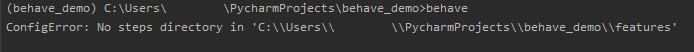

Behave Driven Python
Web application testing with behave
Who AM I?
- Python developer
- Scrum Master
- Tech and soft skills trainer
- Creative Mom
- Visual Thinking enthusiast
What are we going to work on today?
BDD - let's grab a little context
- What is behavior and BDD?
- Benefits of BDD
- Python BDD test frameworks
Behave Test Framework
- Feature files
- Steps implementation
- Context
- Step Data
- Multiline text
- Step parameters
- Scenario outline
- Hooks
- Fixtures
- Tags
Summary - put it all together
- Full example
- POM
- Practice
- Tips and Hints
Workshop goals
After the training:
- You will know the BDD concept and its advantages
- You will know how to work with `behave` framework
- You will be able to create tests based on gained knowledge
Behavior Driven Development
What is behavior?
Where does TDD fall?
- What to test?
- How much to test?
- How to understand failing tests?
“Behaviour” is a more useful word than “test”
`WHAT` more than `HOW`
Given some initial context (the givens),
When an event occurs,
Then ensure some outcomes.
BDD emphasizes the client's perspective
What is BDD?
BDD is a second-generation, outside-in, pull-based, multiple-stakeholder, multiple-scale, high-automation, agile methodology. It describes a cycle of interactions with well-defined outputs, resulting in the delivery of working, tested software that matters.
Dan North - introducing BDDBenefits
- Allows everybody involved to write tests not just coders
- Supports collaboration and automation
- It is specification by example
- Encourage thinking about the application in a natural consistent language
- Behavior specs becomes requirements, ACC and acceptance tests (all in one)
- BDD is a refinement of Agile process
Python BDD test frameworks
- Behave
- pythest-bdd
- radish
- lettuce
Python BDD framework comparison - Automation Panda
Behave Test Framework
Installation
Aga-Ma/behave_workshop/installation.mdFeature Files
features/google.feature
Feature: Google search
As a user
I'd like to search for some phrase
to get new information about it
Scenario: a user can search for a phrase
Given a user visit google
When the user searches for the phrase
Then one of the results contains expected result
behave_demo/releases/tag/featurefiles
Let's finally run it!
...and now let's fix it
Python comes into play
First let's maybe look for something meaningful
features/google.feature
Feature: Google search
As a user
I'd like to search for some phrase
to get new information about it
Scenario: a user can search for a phrase
Given a user visit google
When the user searches for the behave python phrase
Then one of the results contains: Welcome to behave
features/steps/googlesearch.py
from behave import given, when, then
@given('a user visit google')
def step_impl(context):
context.web.open('http://www.google.com')
@when('the user searches for the behave python phrase')
def step_impl(context):
search_input = context.web.find_by_xpath("//input[@name='q']")
search_input.send_keys("behave python")
@then('one of the results contains: Welcome to behave')
def step_impl(context):
xpath = "//*[contains(text(), 'Welcome to behave')]"
results = context.web.finds_by_xpath(xpath)
assert len(results) > 0
No, it will not work yet
But let's do some precheck with 'behave --dry-run'

Looks promising. Doesn't it?
Aga-Ma/behave_demo/releases/tag/steps